Capitolo 3Chapter 3
Esperimenti con gli ElettroniExperiments with Electrons
Ogni oggetto materiale, come sappiamo, è costituito da un aggregato di particelle elementari; una delle particelle più importanti è l’elettrone perché determina molte caratteristiche della materia. In questa scheda descriveremo alcuni esperimenti con i quali è possibile isolare l’elettrone e studiarne le proprietà fondamentali.Every material object, as we know, is made up of an aggregate of elementary particles; one of the most important particles is the electron, because it determines many properties of matter. In this card we will describe some experiments by which it is possible to isolate the electron and study its fundamental properties.
Primo esperimento: conduzione di corrente nel vuotoFirst experiment: conduction of current in a vacuum
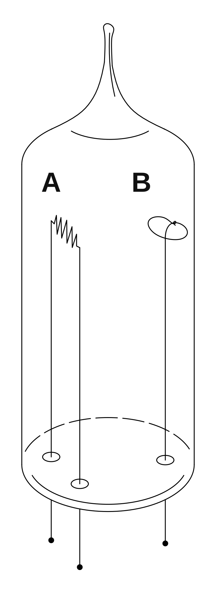
La fig. 1 mostra un'ampolla di vetro nella quale è fatto il vuoto. All'interno dell'ampolla sono disposti due elettrodi A e B; l'elettrodo A può essere riscaldato mediante effetto Joule. Se si applica una tensione tra i punti A e B (fig. 2), si osserva una circolazione di corrente che può essere rilevata con un amperometro inserito in serie al circuito. Se l'elettrodo A viene riscaldato si osserva che la corrente aumenta sensibilmente.Fig. 1 shows a glass bulb in which a vacuum has been made. Inside the bulb two electrodes A and B are arranged; electrode A can be heated by the Joule effect. If a voltage is applied between points A and B (fig. 2), a flow of current is observed, which can be detected with an ammeter connected in series with the circuit. If electrode A is heated, the current is seen to increase appreciably.
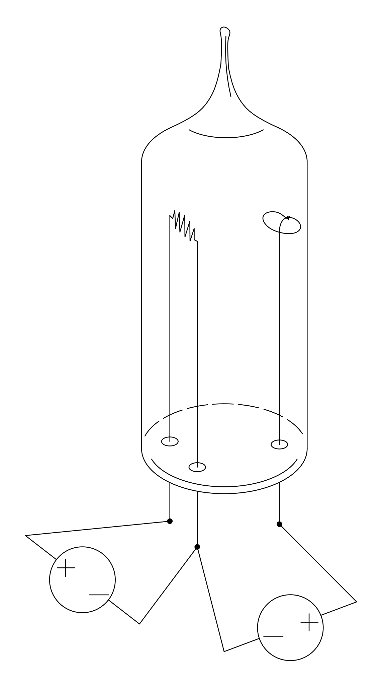
Come è possibile che ci sia conduzione di corrente tra due punti separati nel vuoto?How can there be conduction of current between two separated points in a vacuum?
Il fenomeno si può interpretare pensando che esistano delle particelle cariche che si possono trasferire nello spazio tra i due elettrodi. Quando viene applicata una differenza di potenziale, l'elettrodo A emette queste particelle cariche che, trasferendosi all'altro elettrodo, formano la corrente nel vuoto. Quando l'elettrodo A viene riscaldato, questo libera un numero maggiore di particelle e quindi permette un maggior flusso di corrente.The phenomenon can be interpreted by imagining that there exist charged particles that can move through the space between the two electrodes. When a potential difference is applied, electrode A emits these charged particles which, moving to the other electrode, form the current in the vacuum. When electrode A is heated, it releases a greater number of particles and therefore allows a greater flow of current.
Cannone di particelle cariche (cannone elettronico)A gun of charged particles (the electron gun)

Il dispositivo rappresentato in figura 3 è un ingegnoso sistema che ci permette di realizzare un fascio focalizzato di particelle cariche negative.The device shown in figure 3 is an ingenious system that allows us to produce a focused beam of negatively charged particles.
Consideriamo una particella carica negativa emessa dal filamento caldo A. Nel percorso A→B la particella viene rallentata da una differenza di potenziale di circa 10 V; questo stadio serve a regolare il flusso di particelle: più è alta la tensione e meno particelle passano nello stadio successivo. Nel percorso B→C le particelle vengono accelerate notevolmente da una differenza di potenziale dell'ordine di 5000 V; questo stadio serve a dare energia alle particelle del fascio. Nei percorsi C→D e D→E le particelle vengono prima rallentate e poi accelerate da una differenza di potenziale dell'ordine di 100 V. Questi due stadi costituiscono due lenti elettrostatiche, la prima convergente e la seconda divergente, che permettono di focalizzare il fascio ad una certa distanza fissata.Consider a negatively charged particle emitted by the hot filament A. Along the path A→B the particle is slowed by a potential difference of about 10 V; this stage serves to regulate the flow of particles: the higher the voltage, the fewer particles pass to the next stage. Along the path B→C the particles are accelerated considerably by a potential difference of the order of 5000 V; this stage serves to give energy to the particles of the beam. Along the paths C→D and D→E the particles are first slowed and then accelerated by a potential difference of the order of 100 V. These two stages constitute two electrostatic lenses, the first converging and the second diverging, which allow the beam to be focused at a certain fixed distance.
In uscita da questo sistema si ottiene un fascio di particelle cariche negative veloci, ben focalizzato.At the output of this system one obtains a beam of fast, well-focused negatively charged particles.
È chiaro che un cannone di particelle cariche può essere realizzato in molti modi diversi, e che può avere una tensione di accelerazione anche molto più alta o più bassa di 5000 V; tuttavia lo schema semplice che abbiamo mostrato è sufficiente per gli esperimenti che descriveremo in questa scheda.It is clear that a gun of charged particles can be made in many different ways, and that it can have an accelerating voltage much higher or much lower than 5000 V; however, the simple scheme we have shown is sufficient for the experiments we will describe in this card.
È interessante provare ad alimentare il sistema con tensioni di segno opposto. In linea di principio dovremmo ottenere un cannone di particelle cariche positive, ma si osserva che non viene proiettata nessuna particella. Questo si può spiegare pensando che un filamento riscaldato emette solo particelle cariche negative.It is interesting to try powering the system with voltages of the opposite sign. In principle we should obtain a gun of positively charged particles, but one observes that no particle is projected. This can be explained by supposing that a heated filament emits only negatively charged particles.
Schermo ai fosforiPhosphor screen

Il fascio di particelle cariche non è direttamente visibile. Per poter rilevare il fascio si usa uno schermo ai fosfori (fig. 4).The beam of charged particles is not directly visible. To detect the beam a phosphor screen is used (fig. 4).
Lo schermo ai fosfori è sostanzialmente una lastra di vetro sulla quale è depositata una particolare sostanza chimica che, quando viene colpita dalle particelle cariche accelerate, emette luce visibile, rendendo luminoso il punto di incidenza.The phosphor screen is essentially a glass plate on which a particular chemical substance is deposited that, when struck by the accelerated charged particles, emits visible light, making the point of incidence luminous.
Per ora non ci preoccuperemo di spiegare questo fenomeno di fosforescenza, ma lo useremo solo come fatto empirico che ci permette di realizzare i nostri esperimenti.For now we will not concern ourselves with explaining this phenomenon of phosphorescence, but will use it only as an empirical fact that allows us to carry out our experiments.
Deflessione del fascio dovuta a campi elettrici e magneticiDeflection of the beam by electric and magnetic fields

L'apparato di figura 5 è costituito da un cannone elettronico, da una coppia di piastre che ci permettono di realizzare un campo elettrico uniforme, e da uno schermo ai fosfori. Il tutto è chiuso in una camera di vetro nella quale è fatto il vuoto. Se si alimentano le piastre con una differenza di potenziale si osserva una deflessione dovuta al campo elettrico, esattamente come ci aspettavamo pensando che il fascio fosse formato da un insieme di particelle cariche negative. Quindi questo esperimento costituisce una conferma all'ipotesi che un filamento conduttore riscaldato emette particelle cariche negative.The apparatus in figure 5 consists of an electron gun, a pair of plates that allow us to produce a uniform electric field, and a phosphor screen. Everything is enclosed in a glass chamber in which a vacuum has been made. If the plates are powered with a potential difference, a deflection due to the electric field is observed, exactly as we expected on the assumption that the beam was formed by a set of negatively charged particles. So this experiment provides a confirmation of the hypothesis that a heated conducting filament emits negatively charged particles.
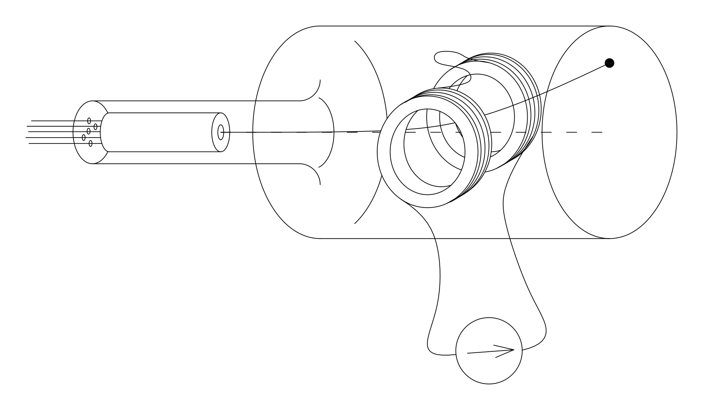
Nel sistema di figura 6 le due piastre conduttrici sono state sostituite da due bobine. Facendo attraversare queste bobine da una corrente, si genera un campo magnetico che provoca una deflessione del fascio. Anche in questo caso la deflessione è esattamente come ce l'aspettavamo in base all'ipotesi che il fascio è composto da un insieme di particelle cariche.In the system of figure 6 the two conducting plates have been replaced by two coils. By passing a current through these coils, a magnetic field is generated that causes a deflection of the beam. In this case too the deflection is exactly as we expected on the hypothesis that the beam is composed of a set of charged particles.
Ora calcoliamo gli angoli di deflessione e relativi al campo elettrico e al campo magnetico, in base all'ipotesi di validità delle leggi di Newton.Now let us compute the deflection angles and relative to the electric field and to the magnetic field, on the assumption that Newton's laws are valid.
Deflessione dovuta al campo elettricoDeflection due to the electric field
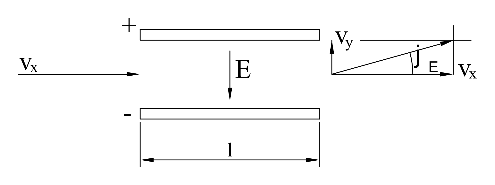
Deflessione dovuta al campo magneticoDeflection due to the magnetic field
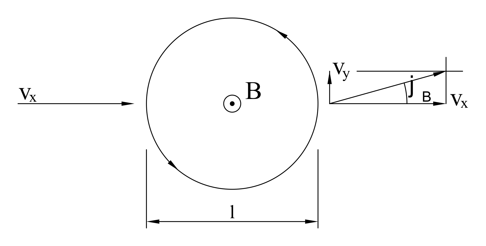
Come si vede dalle formule, gli angoli di deflessione dipendono direttamente dal rapporto tra la carica e la massa delle particelle cariche. Se il fascio fosse composto da diversi tipi di particella, con diversi rapporti , allora avremmo ottenuto diversi angoli di deflessione per le diverse particelle, ed avremmo osservato più di un punto luminoso sullo schermo ai fosfori. Il fatto che otteniamo un solo angolo di deflessione è una prova che le particelle emesse dal filamento incandescente hanno tutte lo stesso rapporto tra carica e massa. È molto ragionevole pensare che in realtà si tratti di un solo tipo di particella, con una determinata massa ed una determinata carica. Quest'ipotesi è confermata da molte altre esperienze e le particelle in questione vengono chiamate elettroni.As can be seen from the formulas, the deflection angles depend directly on the ratio between the charge and the mass of the charged particles. If the beam were composed of different types of particle, with different ratios , then we would have obtained different deflection angles for the different particles, and we would have observed more than one bright spot on the phosphor screen. The fact that we obtain a single deflection angle is proof that the particles emitted by the incandescent filament all have the same charge-to-mass ratio. It is very reasonable to think that they are in fact a single type of particle, with a definite mass and a definite charge. This hypothesis is confirmed by many other experiences, and the particles in question are called electrons.
Esperimento di ThomsonThomson's experiment
Il dispositivo per l'esperimento di Thomson contiene entrambi i sistemi di deflessione: le piastre per il campo elettrico e le bobine per il campo magnetico.The device for Thomson's experiment contains both deflection systems: the plates for the electric field and the coils for the magnetic field.
Lo scopo dell'esperimento è di determinare il rapporto tra la carica e la massa dell'elettrone, e si esegue in due passi.The aim of the experiment is to determine the ratio between the charge and the mass of the electron, and it is carried out in two steps.
Prima si alimentano i due sistemi in opposizione, regolando l'intensità dei campi elettrico e magnetico in modo da osservare una deflessione nulla. In questo modo si ha un bilanciamento tra la forza magnetica e la forza elettrica e, dalla relativa relazione di equilibrio, è possibile ricavare la velocità degli elettroni:First the two systems are powered in opposition, adjusting the intensities of the electric and magnetic fields so as to observe zero deflection. In this way there is a balance between the magnetic force and the electric force and, from the corresponding equilibrium relation, the speed of the electrons can be obtained:
Poi si misura la deflessione dovuta ad uno solo dei due sistemi e, conoscendo la velocità , si determina il rapporto . Ad esempio, misurando :Then the deflection due to only one of the two systems is measured and, knowing the speed , the ratio is determined. For example, by measuring :
Con questi esperimenti abbiamo individuato un'importante particella con carica negativa, l'elettrone. Tuttavia non abbiamo ancora osservato nessuna particella positiva: questo perché un filamento incandescente emette solo elettroni e quindi il cannone elettronico non può sparare particelle con carica positiva. Noi però sappiamo che la materia è sostanzialmente neutra, quindi per ogni carica negativa ci deve essere una corrispondente carica positiva. Nel prossimo esperimento mostreremo che un atomo neutro è formato da un certo numero di elettroni e da una particella positiva. Le particelle positive ottenute togliendo uno o più elettroni ad un atomo neutro vengono chiamate ioni positivi.With these experiments we have identified an important particle with negative charge, the electron. However, we have not yet observed any positive particle: this is because a heated filament emits only electrons, and so the electron gun cannot fire positively charged particles. But we know that matter is essentially neutral, so for every negative charge there must be a corresponding positive charge. In the next experiment we will show that a neutral atom is made up of a certain number of electrons and a positive particle. The positive particles obtained by removing one or more electrons from a neutral atom are called positive ions.
Separazione dell'atomo in ioni positivi ed elettroniSeparating the atom into positive ions and electrons

La figura 7 mostra l'apparato sperimentale. Abbiamo un tubo di vetro e, alle estremità destra e sinistra, due schermi ai fosfori. Nella parte centrale sono disposti due elettrodi forati. All'interno del tubo è presente un determinato gas a bassa pressione (circa atmosfere).Figure 7 shows the experimental apparatus. We have a glass tube and, at the right and left ends, two phosphor screens. In the central part two perforated electrodes are arranged. Inside the tube there is a certain gas at low pressure (about atmospheres).
Se alimentiamo i due elettrodi con una tensione di circa 1000 V, sui due schermi appaiono due punti luminosi (fig. 8): a destra otteniamo un fascio di particelle negative, a sinistra un fascio di particelle positive.If we power the two electrodes with a voltage of about 1000 V, two bright spots appear on the two screens (fig. 8): on the right we obtain a beam of negative particles, on the left a beam of positive particles.
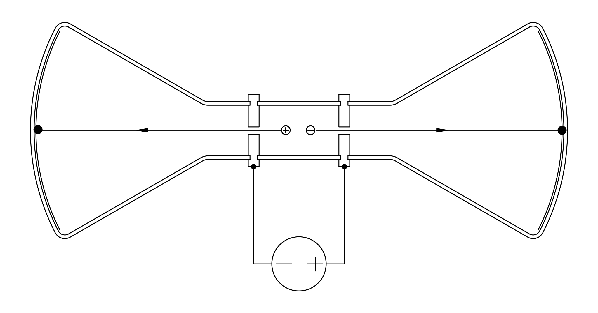
Possiamo inserire dei sistemi di deflessione per studiare il tipo di particelle che vengono proiettate, misurandone il rapporto tra carica e massa (fig. 9).We can insert deflection systems to study the kind of particles that are projected, measuring their charge-to-mass ratio (fig. 9).
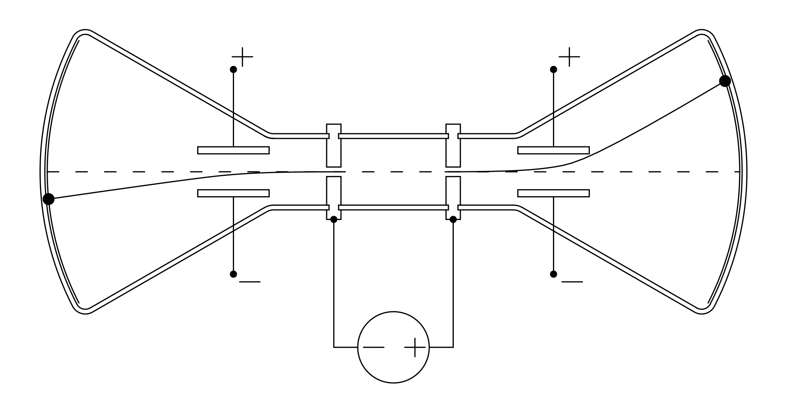
Eseguendo queste misure si osserva che le particelle negative non dipendono dal tipo di gas immesso nell'apparato, e sono le stesse che abbiamo trovato con il cannone elettronico: quindi sono elettroni. Le particelle positive, invece, dipendono dal tipo di gas. Si osserva inoltre che le particelle positive subiscono una deflessione molto minore di quella subita dagli elettroni sotto lo stesso campo elettrico. Questo vuol dire che il rapporto delle particelle positive è molto minore di quello degli elettroni.Carrying out these measurements, one observes that the negative particles do not depend on the type of gas introduced into the apparatus, and are the same ones we found with the electron gun: so they are electrons. The positive particles, instead, depend on the type of gas. One also observes that the positive particles undergo a much smaller deflection than that undergone by the electrons under the same electric field. This means that the ratio of the positive particles is much smaller than that of the electrons.
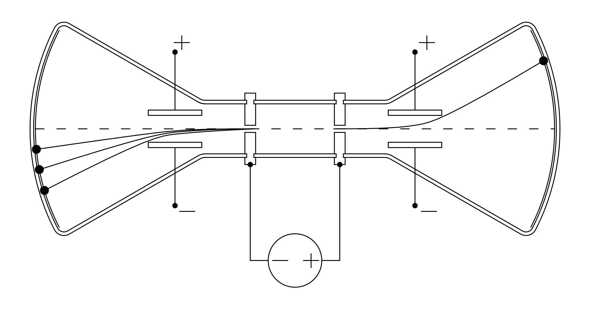
In alcuni casi, come mostra la figura 10, le particelle positive generano due o anche più punti luminosi. I punti aggiuntivi corrispondono ad un rapporto multiplo di quello principale: , , ecc.In some cases, as figure 10 shows, the positive particles produce two or even more bright spots. The additional spots correspond to a ratio that is a multiple of the main one: , , etc.
Questo esperimento può essere interpretato pensando che gli atomi siano formati da una particella positiva, che chiameremo ione, e da un certo numero di elettroni. La maggior parte degli atomi sono uniti e formano una struttura neutra. In alcuni casi però ci possono essere anche atomi divisi e, quando si applica una tensione agli elettrodi, lo ione e gli elettroni vengono accelerati in direzioni opposte. In questo modo, al di là dei fori praticati sugli elettrodi, si generano dei fasci di particelle cariche.This experiment can be interpreted by imagining that atoms are formed by a positive particle, which we will call an ion, and a certain number of electrons. Most atoms are joined together and form a neutral structure. In some cases, however, there can also be split atoms and, when a voltage is applied to the electrodes, the ion and the electrons are accelerated in opposite directions. In this way, beyond the holes made in the electrodes, beams of charged particles are generated.
Le particelle positive subiscono una deflessione molto inferiore a quella degli elettroni, quindi, dovendo avere la stessa carica , vuol dire che hanno una massa molto maggiore. Il rapporto tra la massa dell'elettrone e quella dello ione dipende dall'atomo considerato ed è dell'ordine di .The positive particles undergo a much smaller deflection than the electrons; therefore, since they must have the same charge , this means that they have a much larger mass . The ratio between the electron mass and the ion mass depends on the atom considered and is of the order of .
Il fatto che gli ioni possano generare anche più di un punto luminoso si spiega pensando che uno ione può essere ottenuto anche togliendo più di un elettrone ad un atomo neutro. In questo modo la carica dello ione diviene multipla di quella dell'elettrone, mentre la massa rimane praticamente invariata (perché l'elettrone è molto leggero rispetto all'atomo neutro, quindi la sottrazione di un elettrone non cambia molto la massa); ne risulta un rapporto multiplo di quello fondamentale ed una deflessione multipla.The fact that ions can produce more than one bright spot is explained by the fact that an ion can also be obtained by removing more than one electron from a neutral atom. In this way the charge of the ion becomes a multiple of that of the electron, while the mass remains practically unchanged (because the electron is very light compared with the neutral atom, so removing one electron does not change the mass much); the result is a ratio that is a multiple of the fundamental one and a multiple deflection.
A questo punto può sorgere una domanda: quanti elettroni si possono togliere da un atomo neutro?At this point a question may arise: how many electrons can be removed from a neutral atom?
Alcuni esperimenti, che non discuteremo in questa scheda, mostrano che gli atomi sono formati da un numero finito di elettroni. Questo numero dipende dal tipo di atomo, può essere solo uno, come nel caso dell'idrogeno, e può arrivare oltre a cento. La particella positiva che rimane togliendo ad un atomo tutti i suoi elettroni è chiamata nucleo.Some experiments, which we will not discuss in this card, show that atoms are made up of a finite number of electrons. This number depends on the type of atom; it can be just one, as in the case of hydrogen, and can exceed one hundred. The positive particle that remains when all its electrons are removed from an atom is called the nucleus.
Fino ad ora abbiamo misurato i rapporti degli elettroni e degli ioni, ma non abbiamo ancora misurato la carica e la massa separatamente. Per concludere questa scheda descriviamo un esperimento molto ingegnoso ed elegante che ci permette di misurare la carica dell'elettrone.So far we have measured the ratios of the electrons and of the ions, but we have not yet measured the charge and the mass separately. To conclude this card we describe a very ingenious and elegant experiment that allows us to measure the charge of the electron.
Esperimento di MillikanMillikan's experiment

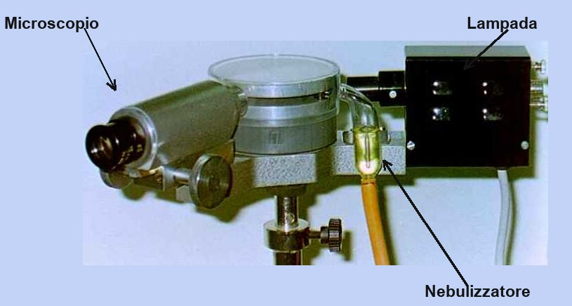
Le figure 11 e 12 mostrano due foto dell'apparecchiatura.Figures 11 and 12 show two photographs of the apparatus.
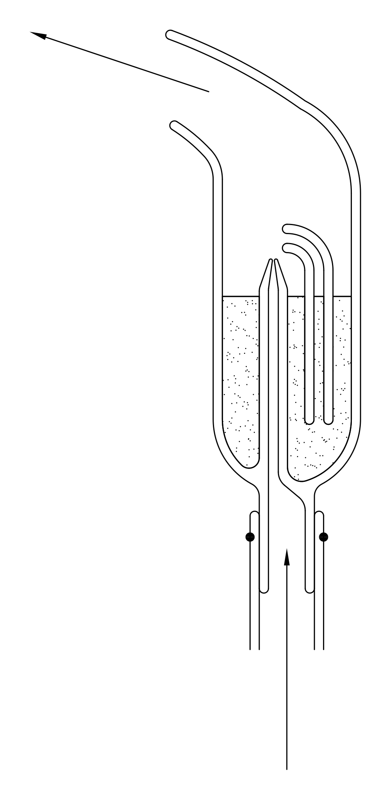
Il primo elemento da osservare è il nebulizzatore per l'olio ad effetto Venturi, rappresentato schematicamente in figura 13. Le goccioline spruzzate dal nebulizzatore entrano attraverso due forellini tra le piastre conduttrici di un condensatore racchiuso sotto una camera di plastica trasparente; la figura 14 mostra uno schema del nebulizzatore, del condensatore e delle goccioline.The first element to observe is the Venturi-effect oil atomiser, shown schematically in figure 13. The droplets sprayed by the atomiser enter through two small holes between the conducting plates of a capacitor enclosed under a transparent plastic chamber; figure 14 shows a diagram of the atomiser, the capacitor and the droplets.


La figura 15 mostra una foto del condensatore e della camera che lo racchiude. Le goccioline spruzzate all'interno del condensatore sono visibili mediante un microscopio, rappresentato a sinistra nella figura 12; l'illuminazione della parte interna del condensatore è ottenuta da una lampada rappresentata a destra nella stessa figura 12. La foto di figura 16 mostra quello che si vede guardando attraverso il microscopio.Figure 15 shows a photograph of the capacitor and the chamber enclosing it. The droplets sprayed inside the capacitor are visible through a microscope, shown on the left in figure 12; the illumination of the inside of the capacitor is provided by a lamp shown on the right in the same figure 12. The photograph in figure 16 shows what one sees looking through the microscope.

Osservando le goccioline si vede che queste cadono sotto l'azione del campo gravitazionale (in realtà si vedono salire perché il microscopio capovolge l'immagine).Observing the droplets, one sees that they fall under the action of the gravitational field (actually they are seen to rise because the microscope inverts the image).
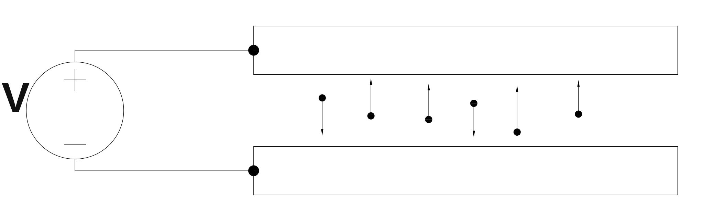
Se si alimentano le piastre con una certa tensione (fig. 17), si osserva che il moto di alcune goccioline cambia: certe scendono più velocemente, certe scendono meno velocemente, certe altre iniziano a salire. Questo vuol dire che alcune goccioline portano una carica elettrica diversa da zero, e quindi subiscono una forza sotto l'azione del campo elettrico.If the plates are powered with a certain voltage (fig. 17), one observes that the motion of some droplets changes: some fall faster, some fall more slowly, some others begin to rise. This means that some droplets carry a non-zero electric charge, and therefore experience a force under the action of the electric field.
Lo scopo dell'esperimento è di misurare la carica di una delle goccioline. Regolando la tensione si può fare in modo che la gocciolina scelta resti ferma in equilibrio. In questa condizione abbiamo un bilanciamento tra le varie forze: la forza peso, la spinta di Archimede dovuta all'aria e la forza elettrica:The aim of the experiment is to measure the charge of one of the droplets. By adjusting the voltage one can make the chosen droplet stay still in equilibrium. In this condition we have a balance among the various forces: the weight, the Archimedean buoyancy due to the air, and the electric force:
In questa equazione è l'accelerazione di gravità, e sono le densità dell'olio e dell'aria, è il raggio della gocciolina ed è il campo elettrico presente tra le piastre del condensatore. Queste grandezze sono tutte note, eccetto il raggio della gocciolina; quindi, per derivare la carica , dobbiamo trovare il modo di misurare questo raggio. Il metodo escogitato da Millikan è molto intelligente.In this equation is the acceleration of gravity, and are the densities of the oil and of the air, is the radius of the droplet and is the electric field present between the capacitor plates. These quantities are all known, except the radius of the droplet; therefore, to derive the charge , we must find a way to measure this radius. The method devised by Millikan is very clever.
Si spegne il campo elettrico e la gocciolina inizia a cadere. La velocità di caduta della gocciolina aumenta fino a raggiungere una velocità limite alla quale le forze dovute al peso, alla spinta di Archimede e all'attrito viscoso con l'aria si bilanciano:The electric field is switched off and the droplet begins to fall. The falling speed of the droplet increases until it reaches a limiting speed at which the forces due to the weight, the Archimedean buoyancy and the viscous friction with the air balance:
In questa equazione abbiamo usato la formula di Stokes per la forza viscosa, , dove è la viscosità dell'aria e è la velocità della gocciolina.In this equation we have used Stokes' formula for the viscous force, , where is the viscosity of the air and is the speed of the droplet.
Dalla seconda equazione possiamo ricavare il raggio della gocciolina:From the second equation we can obtain the radius of the droplet:
Ora possiamo ricavare la carica dalla prima equazione:Now we can obtain the charge from the first equation:
sostituendo la formula trovata per :substituting the formula found for :
La formula definitiva per la carica èThe final formula for the charge is
Le grandezze da misurare nell'esecuzione dell'esperimento sono il campo elettrico e la velocità di caduta della gocciolina . Il campo è dato dal rapporto tra la tensione applicata e la distanza tra le piastre del condensatore. La velocità si ottiene dal rapporto tra lo spazio ed il tempo . Lo spazio si misura mediante una scala graduata visibile all'interno dell'oculare; il tempo si misura con un cronometro manuale.The quantities to be measured in performing the experiment are the electric field and the falling speed of the droplet . The field is given by the ratio between the applied voltage and the distance between the capacitor plates. The speed is obtained from the ratio between the distance and the time . The distance is measured with a graduated scale visible inside the eyepiece; the time is measured with a manual stopwatch.
Risultati sperimentaliExperimental results
Le costanti da utilizzare nella formula per la carica sono:The constants to be used in the formula for the charge are:
Sostituendo questi valori otteniamo la formulaSubstituting these values we obtain the formula
La seguente tabella mostra alcune misure di esempio.The following table shows some sample measurements.
| V (Volt) | Δx (10-3 m) | Δt (s) | q (10-19 C) |
|---|---|---|---|
| 140 | 3,2 | 45,4 | 8,3 |
| 50 | 3,2 | 125,5 | 5,1 |
| 250 | 3,2 | 59,1 | 3,2 |
| 480 | 3,7 | 24,1 | 8,0 |
| 400 | 3,7 | 49,5 | 3,3 |
| 510 | 3,7 | 41,7 | 3,3 |
| 270 | 3,2 | 88,1 | 1,6 |
| 380 | 3,2 | 44,1 | 3,2 |
| 400 | 3,2 | 66,1 | 1,7 |
Il seguente istogramma rappresenta una serie di 50 misure.The following histogram represents a series of 50 measurements.

La cosa importante da osservare in questi risultati è che i valori della carica non sono casuali. Compare ripetutamente il valore di circa C, e poi compaiono altri valori che sono multipli di C, cioè C, C e C. Inoltre non ci sono valori inferiori a C.The important thing to notice in these results is that the values of the charge are not random. The value of about C appears repeatedly, and then other values appear that are multiples of C, namely C, C and C. Moreover, there are no values smaller than C.
Questi risultati provano che la carica accumulata sulle goccioline di olio è corpuscolare, cioè è formata da un certo numero di particelle elementari ognuna delle quali porta una carica costante di C.These results prove that the charge accumulated on the oil droplets is corpuscular, that is, it is made up of a certain number of elementary particles, each of which carries a constant charge of C.
È ragionevole pensare che queste particelle siano elettroni. Quindi con questo esperimento abbiamo determinato la carica dell'elettrone.It is reasonable to think that these particles are electrons. So with this experiment we have determined the charge of the electron.
RicapitolazioneSummary
In questa scheda abbiamo preso familiarità con un'importante particella elementare, l'elettrone. Abbiamo descritto degli esperimenti nei quali l'elettrone si comporta come una particella materiale della meccanica classica. Tramite questi esperimenti abbiamo visto come si può misurare il rapporto tra la carica e la massa ed infine, grazie all'esperimento di Millikan, abbiamo misurato la carica C. Inoltre abbiamo descritto un esperimento che ci permette di raccogliere le prime informazioni sulla struttura dell'atomo: abbiamo visto che un atomo è un sistema neutro formato da un nucleo positivo e da un certo numero di elettroni, e abbiamo osservato che un nucleo è molto più pesante di un elettrone, quindi contiene quasi tutta la massa dell'atomo.In this card we have become familiar with an important elementary particle, the electron. We have described experiments in which the electron behaves like a material particle of classical mechanics. Through these experiments we have seen how the ratio between charge and mass can be measured and, finally, thanks to Millikan's experiment, we have measured the charge C. We have also described an experiment that allows us to gather the first information about the structure of the atom: we have seen that an atom is a neutral system made of a positive nucleus and a certain number of electrons, and we have observed that a nucleus is much heavier than an electron, so it contains almost all the mass of the atom.